Ветер
—м/с
Порывы
—м/с
Воздух

—°C
Температура воды
—°C
Ветер
—° —
—
Почасовой прогноз
6 часов
6 часов
Температура воздуха, скорость ветра, порывы и температура воды.
| Сейчас | +3 ч | +6 ч | +9 ч | +12 ч | +15 ч | +18 ч | |
|---|---|---|---|---|---|---|---|
| Загрузка… | |||||||
Прогноз на сегодня
+ 5 дней
+ 5 дней
Ветер, порывы, температура воздуха и (если доступно) температура воды.
—
| День | Ветер м/с (max) | Порывы м/с (max) | Воздух °C (min–max) | Вода °C (ср.) |
|---|---|---|---|---|
| Загрузка… | ||||
Новости о мазуте (RSS)
Новости обновляются каждые 24 часа на основе открытых RSS источников из интернета.
—